1.1 Arduino IDE¶
Beschreibung¶
Arduino ist eine Open Source-Plattform mit einfacher Software und Hardware. Auch Anfänger können es in kurzer Zeit meistern. Es bietet eine integrierte Entwicklungsumgebung (IDE) für die Codekompilierung und ist mit mehreren Steuerkarten kompatibel. Daher können Sie die Arduino-IDE herunterladen, die Skizze (dh die Codedatei) auf das Entwicklungsboard einladen und dann verwandte experimentelle Phänomene anzeigen. Weitere Informationen finden Sie unter http://www.arduino.cc.
Installieren Sie die Arduino IDE¶
Hier sind die Installationsschritte auf dem Windows-System.
Weitere Systeme finden Sie unter: Install Arduinio IDE in different and FAQ.pdf
Der Code in diesem Kit basiert auf Arduino, daher müssen Sie zuerst IDE installieren. überspringen Sie es, wenn Sie dies getan haben. Gehen Sie nun zu arduino.cc und klicken Sie auf SOFTWARE -> DOWNLOADs. überprüfen Sie auf der Seite die Softwareliste auf der rechten Seite.
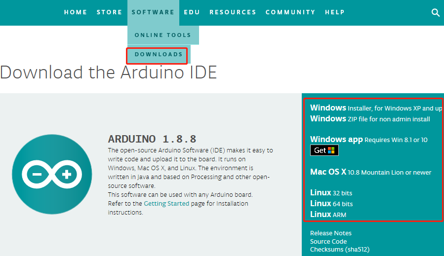Suchen Sie das passende Betriebssystem für Ihr Betriebssystem und klicken Sie auf Herunterladen Es gibt zwei Versionen von Arduino für Windows: Installer oder ZIP-Datei. Es wird empfohlen, die erstere herunterzuladen.
Für die Installationsdatei¶
Schritt 1: Suchen Sie die exe-Datei gerade heruntergeladene.
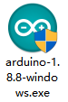Schritt 2: Doppelklicken Sie auf die Datei und ein Fenster wird wie folgt geöffnet. Klicken Sie auf Ich stimme zu.
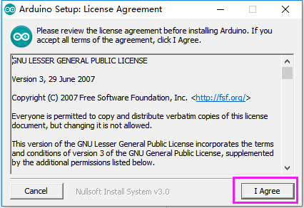Schritt 3: Klicken Sie auf Weiter.
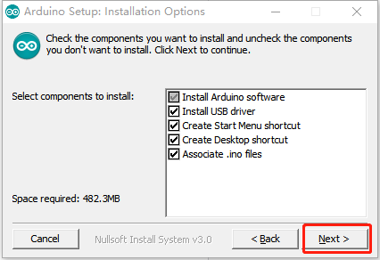Schritt 4: Wählen Sie den zu installierenden Pfad aus. Standardmäßig ist es auf der C-Disk festgelegt. Sie können auf Durchsuchen klicken und andere Pfade auswählen. Klicken Sie OK. Klicken Sie dann auf Installieren.
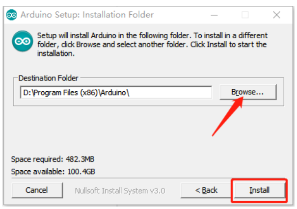Schritt 5: Gleichzeitig werden Sie aufgefordert, die erforderlichen Treiber zu installieren. Wählen Sie „Immer vertrauenswürdige Software von“ Arduino LLC „. Klicken Sie nach Abschluss der Installation auf Schließen.
Bemerkung
Die neue IDE kann zu Fehlern führen, wenn Sie Code unter Windows XP kompilieren. Wenn Ihr Computer unter XP ausgeführt wird, wird empfohlen, Arduino 1.0.5 oder 1.0.6 zu installieren. Sie können auch Ihren Computer aktualisieren.
Für ZIP-Datei¶
Wenn Sie die Zip-Datei bereits heruntergeladen haben, wird sie möglicherweise nicht erkannt, wenn Sie die MCU an den Computer anschließen. Dann müssen Sie den Treiber manuell installieren. Führen Sie die folgenden Schritte aus.
Schritt 1: Schließen Sie die Karte mit einem 5-V-USB-Kabel an den Computer an. Nach einer Weile wird eine Meldung angezeigt, dass die Installation fehlgeschlagen ist.
Schritt 2: Gehen Sie zum Geräte-Manager. Unter anderen Geräten wird Arduino Mega 2560 mit einem Ausrufezeichen angezeigt, was bedeutet, dass der Computer die Karte nicht erkannt hat.
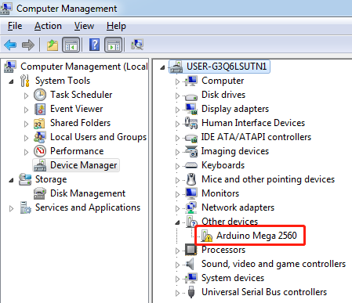Schritt 3: Klicken Sie mit der rechten Maustaste auf Arduino Mega 2560 und wählen Sie Treibersoftware aktualisieren.
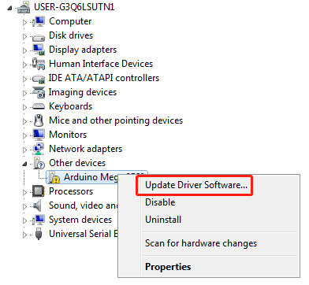Schritt 4: Wählen Sie die zweite Option: Durchsuchen Sie meinen Computer für Treibersoftware.
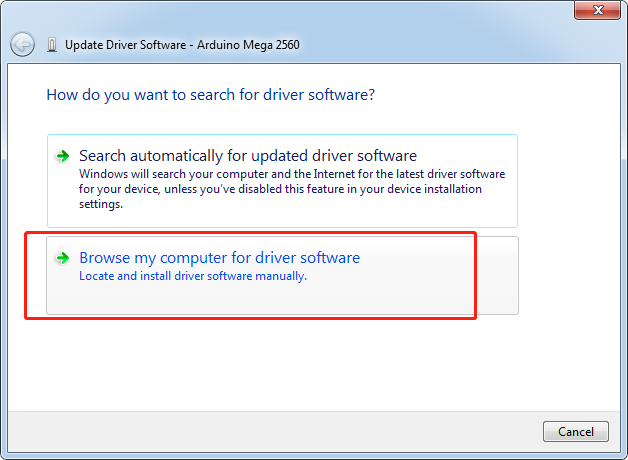Schritt 5: Dann öffnet sich ein Fenster. Klicken Sie auf Durchsuchen. Gehen Sie dann zu dem Ordner, in den Sie gerade die Datei extrahiert haben. Gehen Sie zum Treiberordner und klicken Sie auf OK -> Weiter.
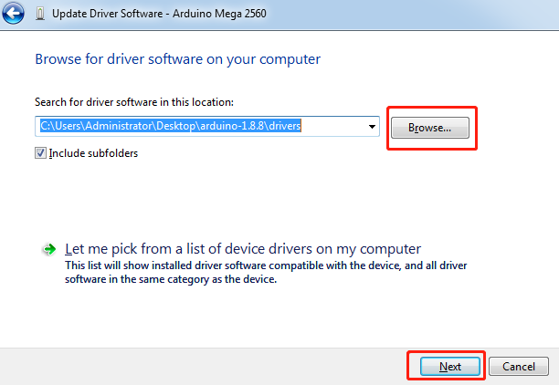Schritt 6: Wählen Sie ‘Always trust software from “Arduino LLC” ‘und klicken Sie auf Installieren.
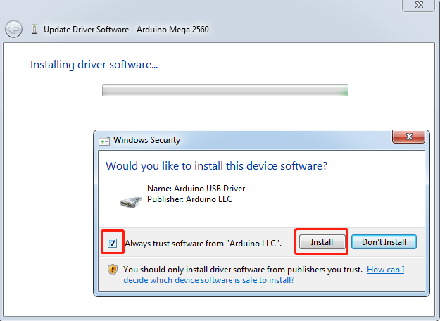Es kann eine Sekunde dauern. Anschließend werden Sie vom System aufgefordert, den Treiber erfolgreich zu installieren. So kann der Computer die Karte jetzt erkennen. Klicken Sie auf Schließen.
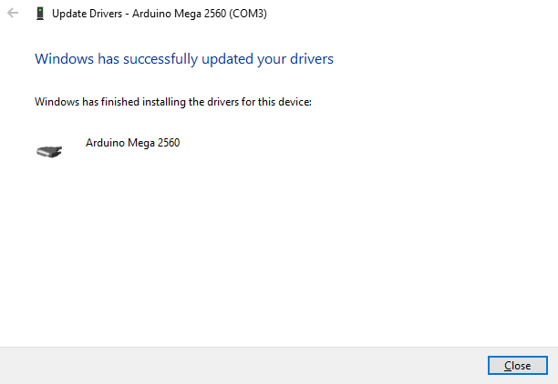Öffnen Sie die Arduino Software (IDE)¶
Doppelklicken Sie auf das Arduino-Symbol (arduino.exe), das durch den Installationsprozess erstellt wurde.
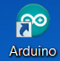Dann erscheint die Arduino IDE. Die Details der Software überprüfen.
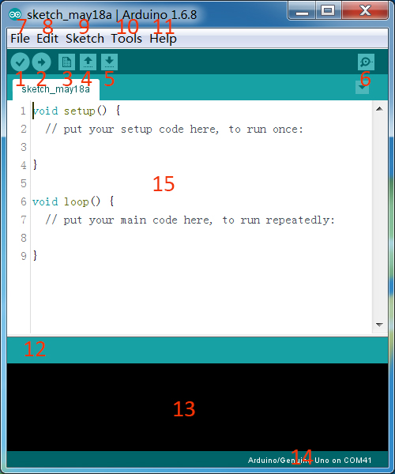1. Verify: Compile your code. Any syntax problem will be prompted with errors.
2. Upload: Upload the code to your board. When you click the button, the RX and TX LEDs on the board will flicker fast and won’t stop until the upload is done.
Neu: Erstellen Sie ein neues Codebearbeitungsfenster.
Öffnen: Öffnen Sie eine .ino-Skizze.
Speichern: Speichern Sie die Skizze.
6. Serial Monitor: Click the button and a window will appear. It receives the data sent from your control board. It is very useful for debugging.
7. File: Click the menu and a drop-down list will appear, including file creating, opening, saving, closing, some parameter configuring, etc.
8. Edit: Click the menu. On the drop-down list, there are some editing operations like Cut, Copy, Paste, Find, and so on, with their corresponding shortcuts.
9. Sketch: Includes operations like Verify, Upload, Add files, etc. More important function is Include Library – where you can add libraries.
10. Tool: Includes some tools – the most frequently used Board (the board you use) and Port (the port your board is at). Every time you want to upload the code, you need to select or check them.
11. Help: If you’re a beginner, you may check the options under the menu and get the help you need, including operations in IDE, introduction information, troubleshooting, code explanation, etc.
12. In this message area, no matter when you compile or upload, the summary message will always appear.
13. Detailed messages during compile and upload. For example, the file used lies in which path, the details of error prompts.
14. Board and Port: Here you can preview the board and port selected for code upload. You can select them again by Tools -> Board / Port if any is incorrect.
Der Bearbeitungsbereich der IDE. Hier können Sie Code schreiben.